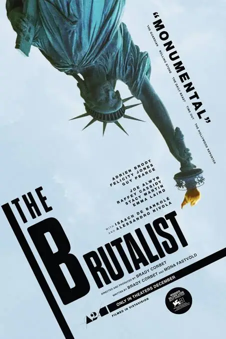
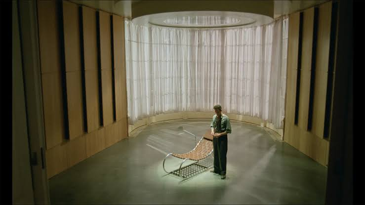

The Brutalist
The Brutalist es un drama histórico dirigido por Brady Corbet y protagonizado por Adrien Brody, Felicity Jones y Guy Pearce. La película explora el sueño americano, la ambición artística, el trauma y el precio que una persona puede llegar a pagar por intentar construir un futuro mejor.
Consultar el contenido
The Brutalist es un drama histórico dirigido por Brady Corbet y protagonizado por Adrien Brody, Felicity Jones y Guy Pearce. La película explora el sueño americano, la ambición artística, el trauma y el precio que una persona puede llegar a pagar por intentar construir un futuro mejor. La historia sigue a László Tóth, un arquitecto judío de origen húngaro que sobrevive al Holocausto y emigra a Estados Unidos después de la Segunda Guerra Mundial para comenzar una nueva vida. Allí intenta reconstruir su carrera y reunirse con su esposa, mientras lucha por abrirse camino en una sociedad que promete oportunidades, pero que también está marcada por las desigualdades, los prejuicios y las relaciones de poder. Su talento llama la atención de un poderoso empresario, Harrison Lee Van Buren, que le encarga un ambicioso proyecto arquitectónico. Lo que inicialmente parece la oportunidad de su vida se convierte poco a poco en una relación compleja en la que se mezclan el arte, el dinero, la explotación y el control.

Key Facts
- The film was directed by Brady Corbet.
- Adrien Brody stars as the architect László Tóth.
- The movie explores architecture, ambition, and immigration.
Crew de The Brutalist (2024)
| Miembro | Cargo / Personaje |
|---|---|
| Brady Corbet | Director |
| Brady Corbet | Guionista |
| Adrien Brody | László Tóth |
| Felicity Jones | Erzsébet Tóth |
| Guy Pearce | Harrison Lee Van Buren |
| Joe Alwyn | Harry Lee Van Buren |